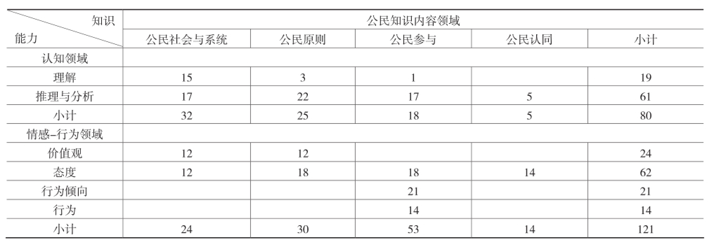
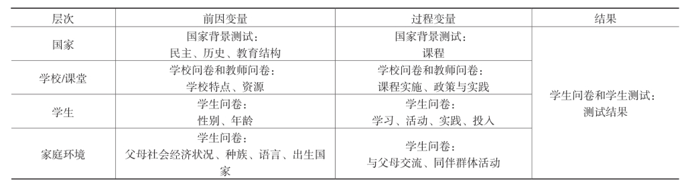
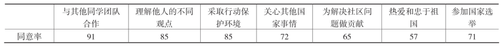
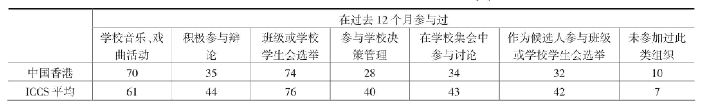
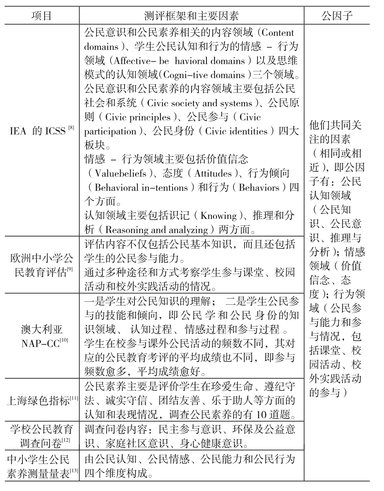

框架方法
澳大利亚国家评价项目NAP
美国教育进展评价项目NAEP
国际教育成就协会（IEA）实施的ICCS
参考International Association for the Evaluation of Education Achievement，IEA的ICCS2009的评价框架
与父母、同伴和老师交流学校公共事务频度 校内活动参与度
ICCS2009的评价框架。评价框架包括两部分：公民素养评价框架和背景框架。
公民素养评价框架主要包括 公民知识内容领域（content domains）、 公民情感-行为领域（affective-behavioral domains）以及认知领域（cognitive domains）。
而公民知识内容领域又分为 公民社会与系统、 公民原则、 公民参与 公民认同。
经过系统整合，以知识维度为横轴、能力维度为纵轴，形成ICCS2009公民素养评价框架表（表1）。而背景框架则包括国家、学校/课堂、学生个人和家庭环境四个层面（表2）。     
报告收集来自学生对三份数据资料，包括一份限时45分钟的认知测试，测试公民意识及素养分知识、分析与推理；一份限时40分钟的国际学生问卷，了解学生关于公民及素养认知的看法以及每位学生的背景；一份限时15分钟的亚洲区域问卷。此外还收集了限时30分钟的教师问卷和校长问卷，前者征询老师对于学校公民及素养教育的看法，并提供关于各自学校组织、文化和其教学任务及背景的信息。
9·11事件使得民主社会的安全保障问题成为人们辩论和研讨的热门话题。有研究者指出，恐怖主义的威胁将侵蚀民主社会的合法性基础，因为反恐法案会危及公民权利。[6]为此，ICCS2009针对这一议题设计了三个问题，以调查学生如何看待近来对于民主社会的威胁以及应如何应对这些威胁。
对“警察可以有权利未经审判监禁嫌疑人”这一问题，保加利亚、捷克、危地马拉等国家学生的同意率达70%及以上，而韩国学生的同意率只有26%，参与国学生的总体结果为56%的学生同意这一观点。
对“安全部门应该被允许检查任何被怀疑危害国家安全者的信件、电话和电子邮件”，危地马拉、印度尼西亚、巴拉圭、泰国等国有80%及以上的学生表示同意，而捷克、芬兰、卢森堡和瑞士则只有不到60%的学生表示同意。
对“当国家安全面临暴力威胁时，国家应该用权力压制媒体”，93%的俄罗斯学生表示同意，而希腊、爱尔兰和新西兰则明显低于参与国总体同意率（78%）。
性别平等是社会平等的直接和重要指标。数据显示，绝大多数的学生支持男女在工作机会、权利等方面的平等。对这一问题，有着显著的国别差异和性别差异。丹麦、挪威、西班牙和瑞典的支持率显著高于ICCS2009参与国平均水平，而多米尼加、印度尼西亚、俄罗斯和泰国则显著低于ICCS2009参与国平均水平。相较与男生，女生更支持性别平等。值得一提的是，中国台湾学生在性别平等问题上表现最优。
IEA将参与公民相关的活动分为传统的参与（如投票等）和非传统的参与（与社会运动相关的参与，如草根运动、抗议活动等）。数据表明，参与国多数学生（各国/地区的比例从51%到57%不等）表示将会参加合法的抗议活动（如在请愿书签名、拒绝购买特定商品等），而仅有19%-27%的学生表示将会参与非法的抗议活动（如在墙上喷绘抗议口号、堵塞交通等）。81%的学生表示将可能或肯定参加国家选举，这一比例在危地马拉和印度尼西亚分别高达94%和92%。中国香港和台湾的比例略高于参与国平均水平（81%），分别为83%和82%。